for people with disabilities, it makes things possible."
The Inclusive Learning Exchange (TILE)
TILE Tool Kit:
The following options could be available to the learner through the TILE system:
1. Screen Enhancement Options: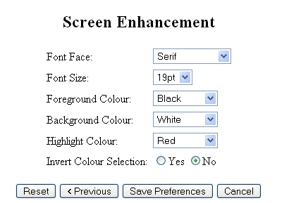 |
Example: Modify Appearance and size of textual and graphical content. 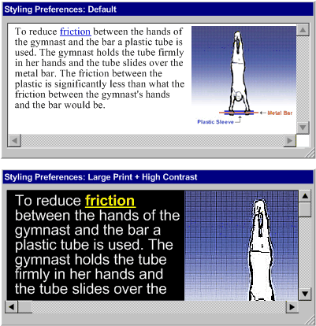 |
2. Alternatives to Visual Options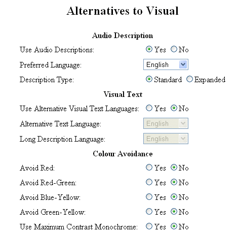 |
|
3. Alternatives to Auditory Options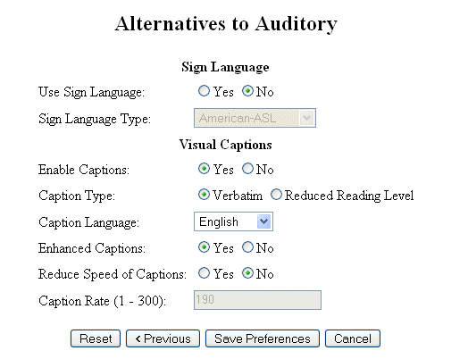 |
Example: Captions and sign language as an alternative to audio content. 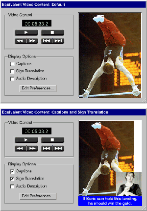 |
4. Alternatives to Text Options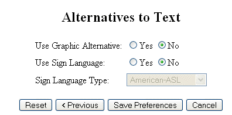 |
Example: Content provided in either graphical or text-base formats.
|
5. Structural Presentation Options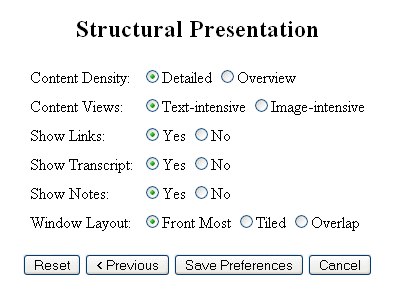 |
Example: Content density may be either expanded or collapsed. 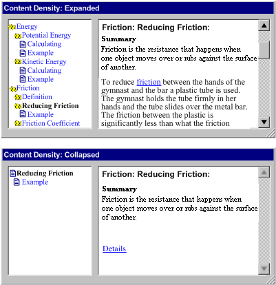 |
6. Structural Navigation Options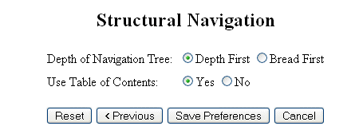 |
Example: Navigation tree showing full depth of content areas, or only high level topics area. 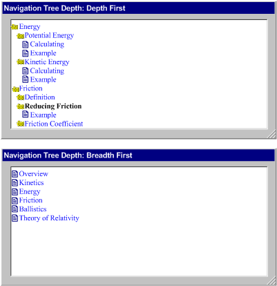 |
7. Personal Stylesheet Option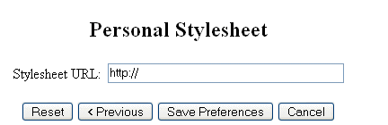 |
|
8. Learner Scaffold Options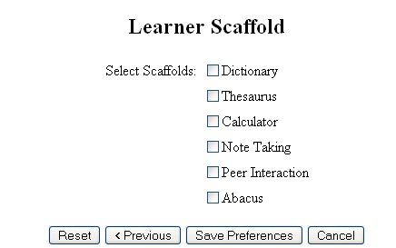 |
Example: Learning activites address varied learning styles by making a range of learner scaffolding available. 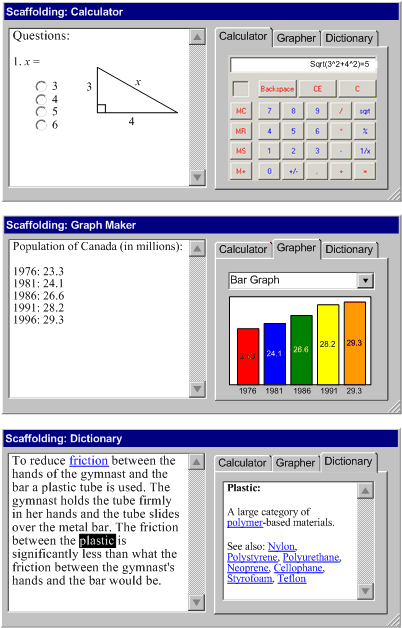 |


This
project is funded by CANARIE
Inc. - Learning Program
Web
Site Hosted by the Adaptive
Technology Resource Centre - University of Toronto